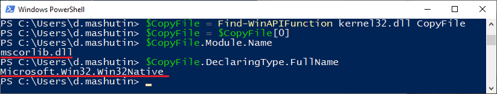

How to Interact with Windows API Functions in PowerShell¶
Windows PowerShell is an object-oriented scripting environment. It is based on the platform of .NET Framework. PowerShell uses .NET classes with their properties and methods. This command shell is helpful for system maintenance tasks, setting up servers, software installation and automated network administration.
But there are specific low-level tasks, which are beyond the standard functionality of Windows PowerShell. They refer to the functions of Windows API defined in the system dynamic-link libraries (DLLs). Although it is not possible to call WinAPI functions directly, there are three common ways to make their methods available in the current session of PowerShell:
Add-Type cmdlet
Extraction of private .NET methods
Reflection
Using Add-Type¶
The Add-Type cmdlet allows to compile the source code of the required Windows API function in C# and to apply a static .NET method in the current PowerShell session.
Using the Add-Type cmdlet requires knowing the data types and parameters of the Windows API function. Such information can be obtained from Microsoft documentation. E.g., the ShowWindowAsync function has the following syntax:
BOOL ShowWindowAsync(
HWND hWnd,
int nCmdShow
);
This function has BOOL return value and two parameters – a handle to the window hWnd and an integer nCmdShow.
In order to call a WinAPI function in PowerShell environment, a C# wrapper is needed. The website pinvoke.net provides C# signatures for most existing WinAPI functions. The functions are listed there in alphabetical order and clustered by dynamic libraries. Full-text search is available. Copying ready made C# code is a faster and easier way to enable Windows API methods in PowerShell. Using the tested signatures from pinvoke.net reduces errors in source code.
The page of the ShowWindowAsync function at pinvoke.net contains the following С# signature:
[DllImport("user32.dll")]
static extern bool ShowWindowAsync(IntPtr hWnd, int nCmdShow);
In the example above, BOOL in C/C++ has been coverted into bool in .NET, the HWND handle – into IntPtr, and int has not been changed.
Now declare a variable and set it according to the C# signature:
$Signature = @"
[DllImport("user32.dll")]
public static extern bool ShowWindowAsync(IntPtr hWnd, int nCmdShow);
"@
The signature is saved in the $Signature variable and the public key-word is added to the signature code. That is required to make the new method available in the current PowerShell session.
Then use the Add-Type cmdlet to add a new type and saved it in a variable. The cmdlet must get the variable with C# signature, the name and the namespace of the type as parameters.
$ShowWindowAsync = Add-Type -MemberDefinition $Signature -Name "Win32ShowWindowAsync" -Namespace Win32Functions -PassThru
The Add-Type cmdlet does not create an object for the method by default. That can be fixed by adding PassThru. Then the class can be called in the current PowerShell session using the name and the namespace assigned to the type: ‘[Win32Functions.Win32ShowWindowAsync]’.
Here is how to address the static method of a WinAPI function that is now available in the PowerShell session:
$ShowWindowAsync::ShowWindowAsync((Get-Process -Id $pid).MainWindowHandle, 2)
Calling a static .NET method requires two colons between the variable name and the method. In the example above, the method of the ShowWindowAsync function is used to minimize the active window. The Get-Process cmdlet uses $pid variable to get the ID of the current PowerShell session process. Then the ShowWindowAsync method sets the main window handle to ‘2’ to minimize it.
Similar source code can be used for adding a function to PowerShell. Save a relevant script in user profile to make the method available during the future sessions.
Extracting private .NET methods¶
.NET uses Windows API functions. The framework calls them from the loaded dynamic libraries using private static methods with the DllImport attribute.
Windows PowerShell allows to write a script or a function that will search for the required WinAPI method in the loaded DLLs. Here is an example of such function:
function Find-WinAPIFunction
{
[CmdletBinding()]
[OutputType([System.Reflection.MethodInfo])]
Param
(
[Parameter(Mandatory = $True, Position = 0)]
[ValidateNotNullOrEmpty()]
[String]
$Module,
[Parameter(Mandatory = $True, Position = 1)]
[ValidateNotNullOrEmpty()]
[String]
$FunctionName
)
[System.AppDomain]::CurrentDomain.GetAssemblies() |
ForEach-Object { $_.GetTypes() } |
ForEach-Object { $_.GetMethods('NonPublic, Public, Static') } |
ForEach-Object { $MethodInfo = $_; $_.GetCustomAttributes($false) } |
Where-Object {
$MethodInfo.Name.ToLower() -eq $FunctionName.ToLower() -and
$_.Value -eq $Module
} | ForEach-Object { $MethodInfo }
}
For example, this function can find the CopyFile method in kernel32.dll and determine its containers. Declare a variable $CopyFile and set it to the search results for ‘CopyFile’ in kernel32.dll from Find-WinAPIFunction:
$CopyFile = Find-WinAPIFunction kernel32.dll CopyFile
If there are multiple entries, the function will save a massive of results in the variable. To use the first result only:
$CopyFile = $CopyFile[0]
Then discover the containing module and type:
$CopyFile.Module.Name
$CopyFile.DeclaringType.FullName
The PowerShell window will display the following:
The CopyFile method is in the Microsoft.Win32.Win32Native type of the mscorlib.dll library. Now you can add a function that will call the method by extracting it from the containing dynamic library and type. An example of such function can be found here .
Using reflection¶
Reflection is another way of calling the methods of WinAPI functions in PowerShell environment. First, type introspection is performed, which is discovering methods and properties of a function. The most obvious way to do that in PowerShell is the Get-Member cmdlet. Then the collected data is used to generate code dynamically.
In order to understand the process of reflection and dynamic code generation, one should think of the current system environment as a structure of nested containers. The highest level is AppDomain of the PowerShell session. It contains multiple assemblies. Assemblies contain modules, i.e. DLLs. Modules are containers for types. Finally, types contain members that are subject for reflection. Members include methods, properties, nested types, and events.
The concept of generating code dynamically is to define all elements of the nested structure. First, a dynamic assembly is defined within the current AppDomain. Then a dynamic module, a dynamic type and a dynamic method must be defined progressively. The dynamic method is assigned Public and Static attributes, as well as a custom DllImport attribute. Finally, the CreateType method is applied to make the new dynamically defined method available for the current PowerShell session.
Here you can find an example of the function, that implements the abovementioned process.
Making the choice¶
The Add-Type cmdlet is the simplest and the least error prone way to make WinAPI functions available in PowerShell environment. This method is sufficient for accessing most functions of the system DLL’s.
But using the Add-Type cmdlet requires writing temporary files to disk and calling csc.exe – the C# compiler. That may be undesirable when zero footprint is necessary. In such cases extraction of .NET methods is preferable.
Finally, reflection may do the job if the required WinAPI function is not present in the loaded part of .NET framework or is contained in a DLL that is not accessible from the current Windows PowerShell session.